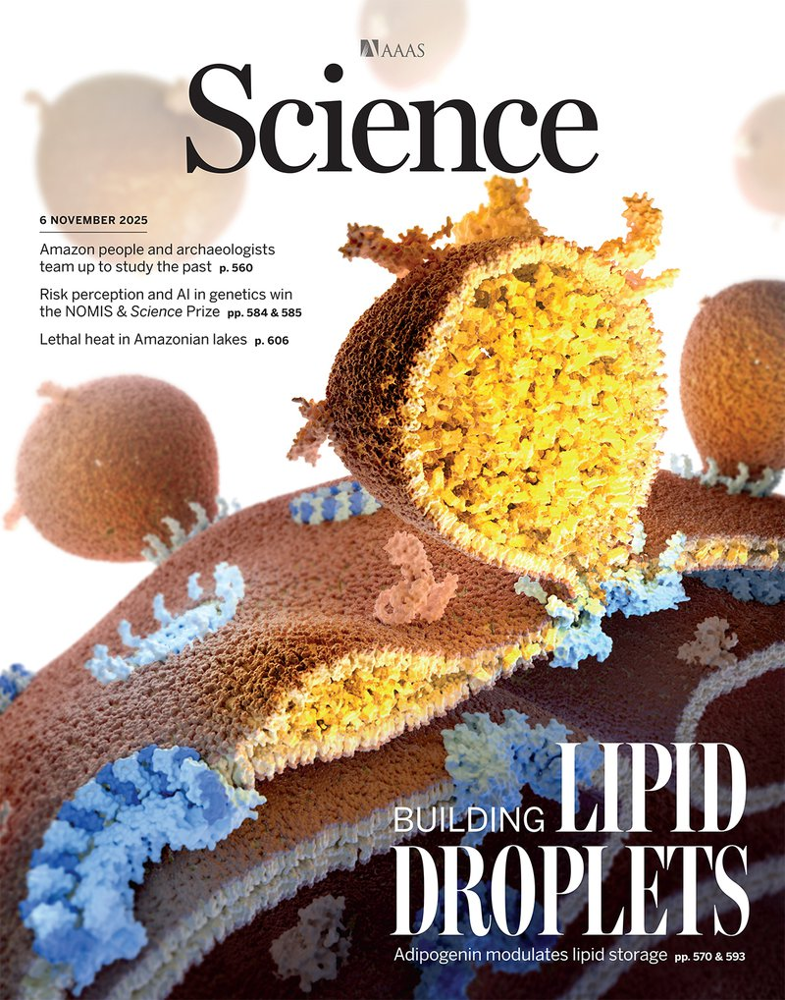
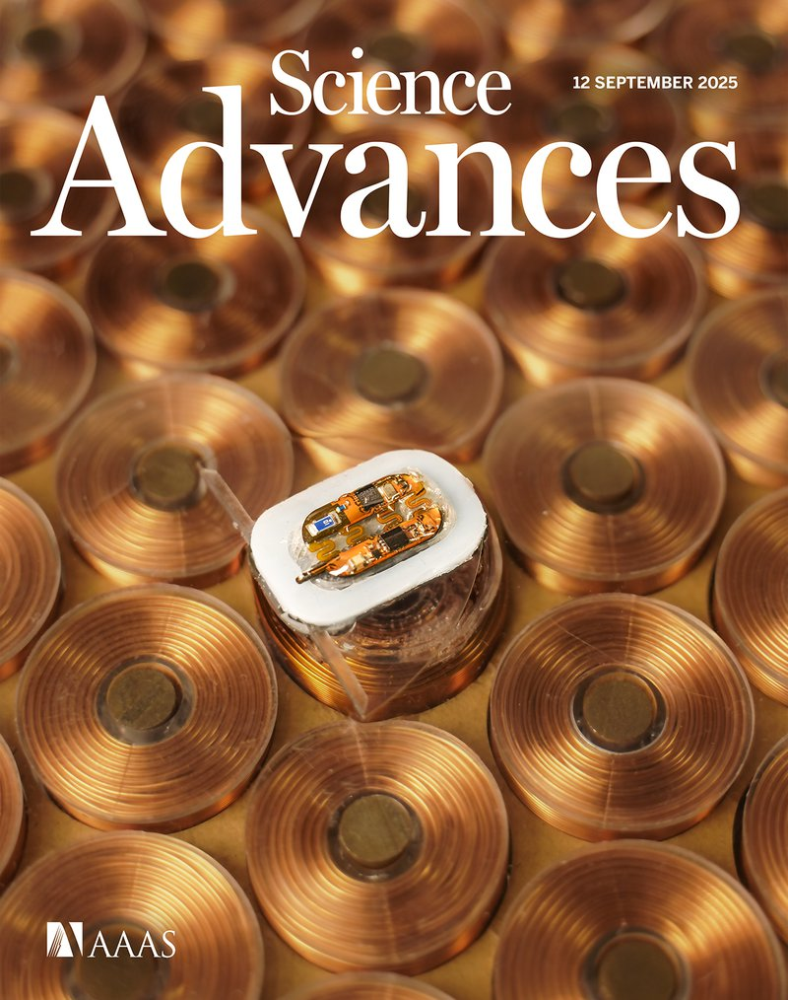
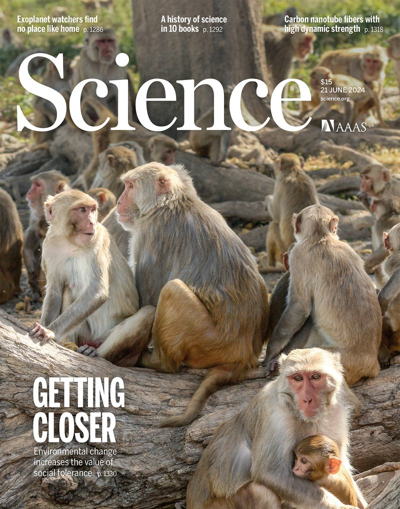

博士生,物理学 现任
马里兰大学帕克分校 · 联合量子研究所
导师 Mohammad Hafezi 教授。研究方向为集成非线性拓扑光子学—— 把凝聚态物理里的想法,变成能真正用起来的光子芯片。
我花时间最多的三篇论文。完整列表—— 包括预印本、撰写中的稿件、和媒体报道—— 见论文页面。

让非线性光子芯片每次都按同样的方式工作—— 向晶圆级可靠性迈出的一步。

在同一个拓扑芯片上,两组频梳跨越完全不同的时间尺度(1 THz 与 4 GHz)互相锁定。

首次实验演示了从晶格中继承拓扑保护的频率梳。很多研究都从这里出发。
基本信息
搞物理也搞工程，爱折腾也爱捣鼓。
我把自己看作一个混合体—— 一半物理学家,一半工程师,在实验和理论之间徘徊。我喜欢不用非此即彼。
我的工作处在拓扑光子学、非线性光学与频率梳的交汇处—— 用光子晶格的几何结构,做出稳定、宽带、且能放进芯片里的光学"标尺"。
基础科学很酷，而且我真心希望它能做点事。生命的价值在于创造。
—— 徐李达
马里兰大学帕克分校 · 联合量子研究所
导师 Mohammad Hafezi 教授。研究方向为集成非线性拓扑光子学—— 把凝聚态物理里的想法,变成能真正用起来的光子芯片。
南方科技大学(SUSTech),深圳
疫情导致的，本科到博士之间的间隔年,在做研究、也在想下一步该往哪走。
南京大学，南京
一切的起点—— 第一次认真接触物理。
三条互相交织的线索,我一直在不断拉扯。每一条都自成一个领域——加在一起,就是我把基础物理变成器件的方式。
四项美国临时专利（2025–2026 年提交），所有共同发明人均等署名。出自 Hafezi 课题组与 NIST 合作者的联合工作。
发明人： M. J. Mehrabad, L. Xu, S. Sarkar, Z. Y. Wei, M. Hafezi
临时专利 · 编号 63/964,690
获奖2026年马里兰大学年度发明奖
发明人： M. J. Mehrabad, L. Xu, G. Moille, K. Srinivasan, M. Hafezi
临时专利 · 编号 63/944,606
发明人： M. J. Mehrabad, A. Parhizkar, L. Xu, M. Hafezi
临时专利
发明人： L. Xu, M. J. Mehrabad, S. Sarkar, A. Padhye, M. Hafezi
临时专利
我有幸和马里兰大学、NIST 以及更多机构里出色的合作者一起工作。科学是团队运动,而团队让它值得做。
理论与实验、物理与工程、基础与应用—— 我偏爱中间那块乱糟糟的地带。明晰的边界往往是错的。
我给课题组写了不少仿真代码软件。看到别人真的用上你写的工具,会有一种特别的满足感。
我喜欢用简单的语言讲清楚复杂的想法。如果一个诺贝尔奖级别的概念没法讲给一个好奇的朋友听,那说明我们还没真正理解它。
一系列关于保罗·狄拉克的故事,讲反物质和量子场论是怎么诞生的,共五集。科普是一门独立的手艺—— 我喜欢一直在练。
我总是乐于聊聊—— 关于光子学、合作机会,或其他任何事。